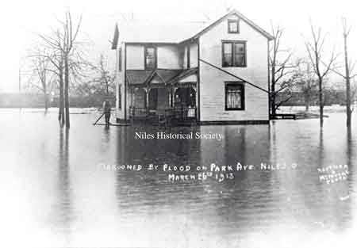

Ward-Thomas Museum


Photographs of the 1913 Flood in Niles, Ohio
Ward — Thomas
Museum
Home of the Niles Historical Society
503 Brown Street Niles, Ohio 44446
Click here to become a Niles Historical Society Member or to renew your membership
Click on any photograph to view a larger image, click on image again to zoom into photograph.
| Trudy E. Bell, M.A,, now considered the foremost national authority on the Flood of 1913, in describing the effects of the flood is quoted as saying— "This mammoth storm system with its ferocious tornadoes and floods set records for fatalities and flood heights that still stand today - and which dwarfed both Sandy and Katrina in geographical extent - created institutions that evolved into today's United Way, Red Cross, Rotary, IBM, and Cox Communications."
PO1.1004 Map of 1913 Flood Plain  PO1.1003 Marooned by flood on Park Avenue |
Photographs of the 1913 Flood in Niles, Ohio Newspaper account of 1913 Flood. Flooding from the four-day rain that began on Easter, March 23, 1913, however, was unprecedented and never to be equalled in the century that followed. “It was attributable solely to an almost unceasing rain of four days and four nights, something akin to the biblical deluge,” Joseph Butler wrote in his first-hand account of the event. Although Mahoning River dwellers were forced to flee their homes, “it was the industries that suffered worst,” wrote Butler, the industrialist who founded the Butler Institute of American Art in Youngtown. “All of these located in the river valley were put hopelessly out of operation, the water standing many feet deep in the mill buildings and covering the machinery.” Immediately after the 1913 flood, the Ohio Legislature allowed the formation of conservancy districts and authorized counties to form three-member boards to construct and maintain flood-control structures. In the Mahoning Valley, the Lake Milton dam was completed in 1916, forming the lake that would increase Youngstown’s industrial water supply and begin the creation of water-storage capacity to alleviate flooding here. In the decades that followed, dams were built to create and regulate the water levels of Berlin, West Branch, Mosquito and Shenango River Lake reservoirs. Those lakes became part of a vast U.S. Army Corps of Engineers-managed network of water-storage lakes that would reduce downstream flooding, help maintain consistent river water depths and provide recreational boating opportunities. Each fall, the Corps reduces water levels in these lakes to increase their capacity to store snow melt and spring rains, and thereby reduce downstream flooding. “It was officially called the ‘reservoir design flood,’” for Berlin, Mosquito and West Branch, said Werner Loehlein, a hydraulic engineer with the Corps in Pittsburgh. Those lakes and dams were designed to withstand a recurrence of the 1913 flood, but with some water going over the dams’ emergency spillways, he explained. “From a volume standpoint, it was a record flood,” Loehlein said. The 1913 flood consisted of “a bunch of intense rainstorms with short periods of little or no rain in between,” he added. Over the four days, the Mahoning Valley got between 7 and 9 inches of rain, Loehlein said, adding that rainfall averages were 8.8 inches in the west branch basin of the Mahoning River, 7.15 inches on the river’s main stem and 8.35 inches along Mosquito Creek, which flows into the river in Niles. — By PETER H. MILLIKEN | milliken@vindy.com |
|
|
PO1.1023 The Gilmore Restaurant and
Manhattan Hotel on South Main Sreet and Visible are people watching from
second |
PO1.1018 Looking North, the Gilmore Restaurant and Manhattan Hotel on South Main Sreet and Water Street during the 1913 flood. |
PO1.1021 Main Street looking south from Mill Street (State Street) during flood, March 1913. The Gilmore Restaurant and Manhattan Hotel are visible on the right of the image. |
|
PO1.1019 Looking north up Main Sreet from
iron bridge with the Gilmore Restaurant and |
PO1.1025 The South Main Street iron bridge was extensively damaged during the flood of 1913. |
PO1.1026 Looking east from the iron bridge
toward Main Street. The tall building in right background is the
Hartzell Building |
| |
||
PO1.1012 The Streetcar Waiting Station on Robbins Avenue during the 1913 flood. Kestner & McIntyre photographers. |
PO1.1016 The South Main Street bridge from
the |
PO1.1805 The frame Streetcar Waiting Station
on Robbins Avenue, along Mosquito Creek |
|
|
||
|
PO1.1031 An Erie Train sneaking out of Niles, Ohio across the bridge with Church Street flooded. The Streetcar Waiting Station can be seen under the trestle. |
PO1.1719 Erie railroad bridge at Church
Street in |
PO1.1013 The Streetcar Waiting Station on Robbins Avenue during the 1913 flood. The street cars are marooned on Robbins Avenue during the 1913 Flood. |
| |
||
PO1.1005 Damage to the Pitts house located on East Federal Street right by Mosquito Creek. |
PO1.1029 Mosquito Creek bridge over West Federal Street. At the height of the 1913 flood, the water was over the floor of the bridge. |
PO1.1034 Sam Park’s farmhouse in the background. The “Red Bridge” or High Iron bridge was located on West Park Avenue in Niles. |
PO1.1639 Postcard view of the 1913 flood that created havoc up and down the state. Taken from the Main Street bridge over the Mahoning River facing south. The building at the upper right is the Eagles Lodge building. |
PO1.1032 Looking northwest from South Main Street bridge. The steeple of St. Stephen’s Church can be seen at the upper right of photo. |
PO1.1000 The Mahoning River in full spate from the south side of Niles looking north toward St. Stephen’s Church and school. |
|
PO1.2093 A photo of a view from First Street looking across the river to the north. |
PO1.2092 A photo of the South Main water tower, located on Water Street, on the right. |
PO2.33 A photo of the Manhattan Hotel as seen from the northeast during the flood of 1913. Notice the rowing boat in the foreground. |
PO1. 1015 Pennsylvania RR station after the flood has begun to recede. Kestner & McIntyre photographers. 1913. |
PO2.349 A postcard photo of the 1913 flood
as seen from the rooftops of Main Street looking |
PO1.999 Empire Iron and Steel mill
in the background. Railroad cars were placed on the county bridge
at right to keep it from washing away. |
|
PO1.1024 The Southside Presbyterian Church during the 1913 flood. |
PO1.1033 In the flood of 1913, this was
one of |
PO1.1002 Third Street School, now Garfield School, with a rowboat floating in the street. |
|
PO1.1006 Russia Sheet Mill near the Mahoning River. |
PO1.1030 Niles Firebrick Factory in the 1913 flood. |
PO1.1017 Park Avenue Bridge over Mosquito Creek and rear of buildings on East State Sreet. |
|
PO5.50 Homes in South side during the flood. |
PO1.1607 A general view of the 1913 flood. |
PO1.1007 The future location of the Niles Daily Times at the corner of West State and Arlington. |
PO1.1001 View of Furnace Street, later State Street, during 1913 Flood. |
PO1.2351 A postcard photo from the 1913 flood, showing Mill Street (now West State Street). The Flory Boarding House is located center rear at the corner of Chestnut and State. |
PO1.1011 Downtown area during the 1913 Flood. View is of Water Street, looking east, with the Manhattan Hotel on the left. |
|
|
||
|
View of the intersection of Water and Main Street showing the crowd in front of the Manhattan Hotel. |
View from South Main Street looking across the Mahoning River with street car tracks and bricks in foreground. |
Horse-drawn wagon crossing railroad tracks which are underwater. |
|
|
||
|
|
||


{kind=link}
{kind=link}
{kind=link}
{kind=link}
{kind=link}
{kind=link}
{kind=link}
{kind=link}
{kind=link}
{kind=link}
{kind=link}
{kind=link}
{kind=link}
{kind=link}
{kind=link}